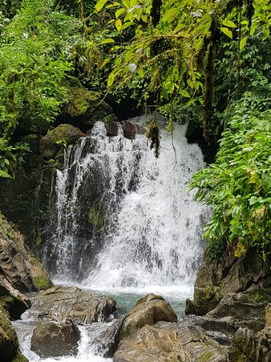
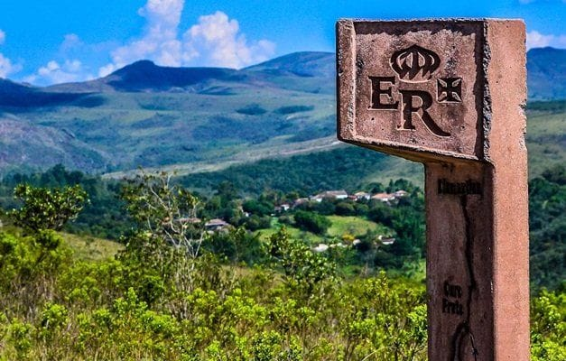

O ecoturismo vem ganhando cada vez mais destaque por unir lazer, contato com a natureza e consciência ambiental. Mais do que uma simples viagem, ele representa uma forma de explorar o mundo de maneira responsável, valorizando a preservação dos recursos naturais e o respeito às comunidades locais. Atividades como caminhadas e trilhas, por exemplo, não só proporcionam experiências únicas em meio à natureza, como também trazem diversos benefícios para a saúde, ajudando a reduzir o estresse, melhorar o condicionamento físico e promover o bem-estar mental. Pensando nisso, nosso site foi criado para apresentar trilhas localizadas nas regiões metropolitanas de Belo Horizonte, reunindo opções acessíveis e cheias de beleza natural. Além das paisagens encantadoras, essas regiões também carregam uma rica história e cultura, tornando cada passeio ainda mais especial. Cidades como Nova Lima, Lagoa Santa, Betim, Baldim Esmeraldas, Mateus Leme, Raposos, Sabará e Taquaraçu de Minas são alguns dos destinos que você poderá explorar.

Aqui, você encontrará muito mais do que trilhas: encontrará histórias, cultura e experiências que conectam você à natureza e às origens dessas cidades. Prepare-se para descobrir novos caminhos, respirar ar puro e viver o melhor do ecoturismo.
Queremos construir uma comunidade de aventureiros conscientes, onde cada passo dado na natureza seja acompanhado pelo desejo de preservá-la para as futuras gerações. Seja você um trilheiro experiente ou alguém dando os primeiros passos no ecoturismo, calce suas botas, prepare a mochila e venha construir memórias inesquecíveis nas montanhas e vales de Minas Gerais.
